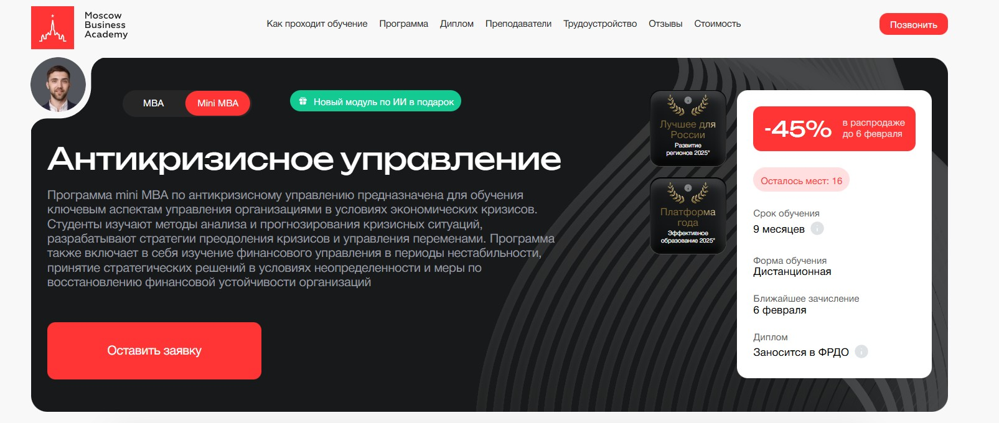
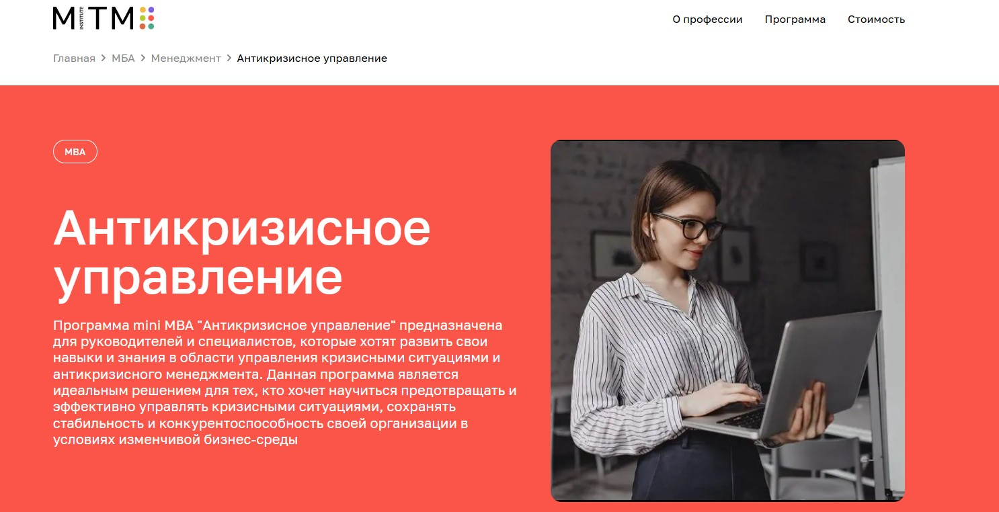
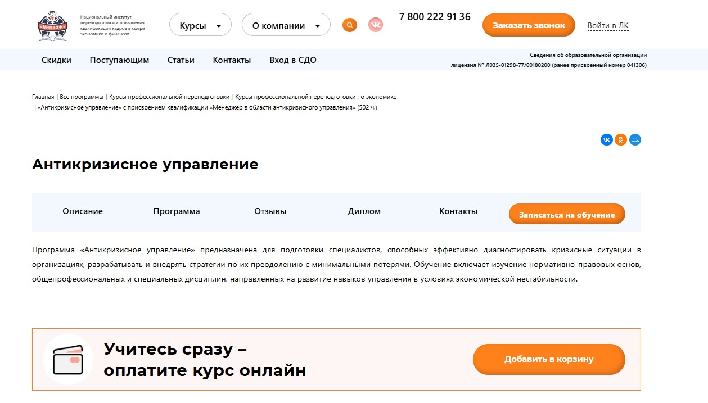
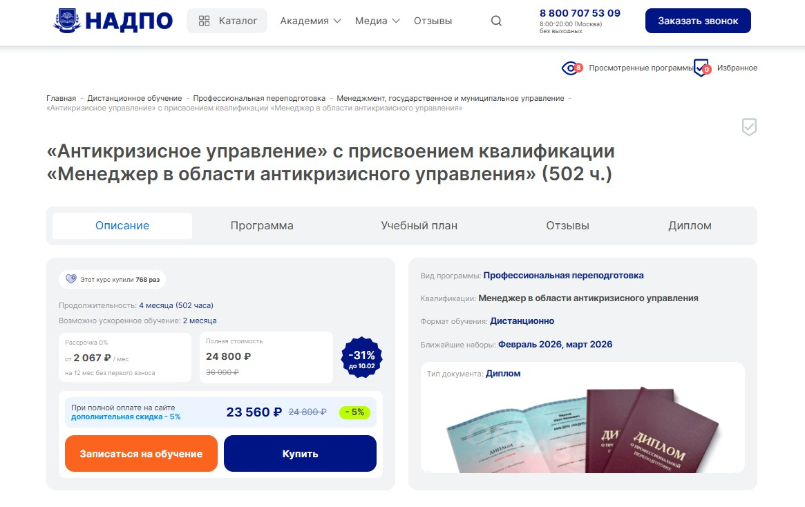
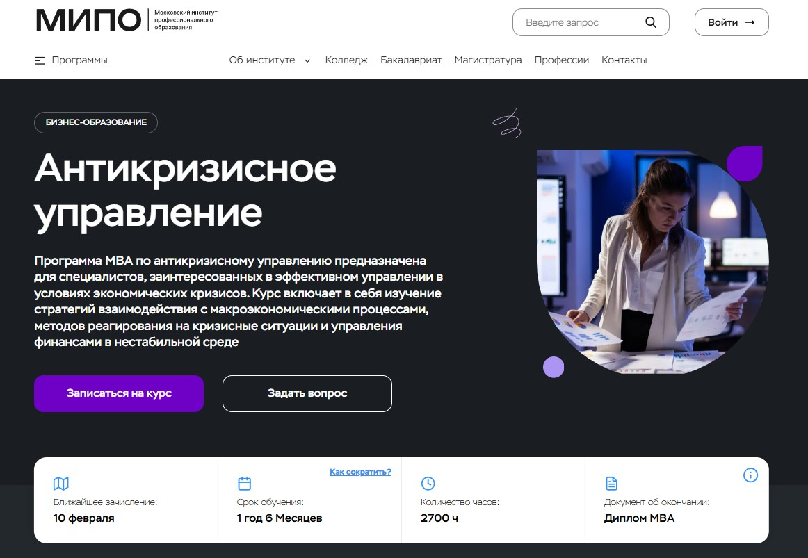
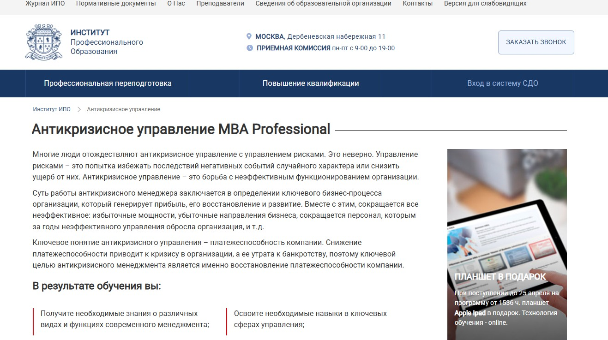
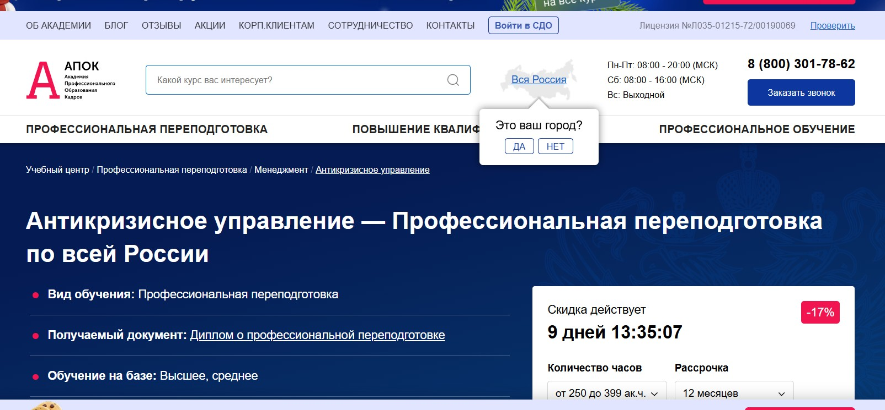

Лучшие курсы по антикризисному управлению в 2026 году
| Место | Программа обучения | Сайт курса |
|---|---|---|
| 1 🥇 | Mini MBA по антикризисному управлению Московская Бизнес Академия |
Перейти |
| 2 🥈 | Директор по стратегическому развитию Академия Eduson |
Перейти |
| 3 🥉 | Программа mini MBA «Антикризисное управление» Московский институт технологий и управления |
Перейти |
| 4 | Курс профессиональной переподготовки по
антикризисному управлению Национальный институт переподготовки и повышения квалификации кадров в сфере экономики и финансов |
Перейти |
| 5 | Профессиональная переподготовка по антикризисному
управлению Национальная академия дополнительного профессионального образования |
Перейти |
| 6 | Программа MBA по антикризисному управлению Московский институт профессионального образования |
Перейти |
| 7 | Антикризисное управление MBA
Professional Институт профессионального образования |
Перейти |
| 8 | Профессиональная переподготовка по антикризисному
управлению Учебный центр АПОК |
Перейти |
Mini MBA по антикризисному управлению – Московская Бизнес Академия
⭐ Рейтинг: 5.0
- Сайт: https://moscow.mba/programs/mini/online/crisis-management
- Полная стоимость: 227 095 ₽ или 9 462 ₽/мес при рассрочке на 24 месяца. Возможен налоговый вычет до 13% от суммы. Грант на обучение не предоставляется.
- Рассрочка: 9 462 ₽ в месяц на 24 месяца, первый платёж — через месяц.
- Длительность: 9 месяцев.
- Документ: Международный диплом установленного образца с присвоением степени «Мастер делового администрирования» с европейским приложением. Запись в федеральный реестр ФРДО.
- Трудоустройство: Помощь в создании резюме, формировании портфолио, подготовке к собеседованиям и поиску клиентов при запуске собственного дела.
Особенности курса:
Учебная программа разработана с учётом актуальных вызовов 2026 года и ориентирована на решение реальных задач в условиях экономической нестабильности. Участники осваивают стратегическое планирование, методы диагностики угроз и инструменты восстановления финансовой стабильности. Обучение проходит полностью онлайн, с доступом к материалам в любое время. 70% программы — практика на основе реальных кейсов и задач. Каждому студенту назначается куратор, который сопровождает на всём этапе. После завершения — бонусный модуль по использованию искусственного интеллекта в управлении проектами.
Преподаватели курса:
-
София Кузина — эксперт по личной стратегии, коуч международного уровня PCC ICF, выступает в Сколково и Skillbox.
-
Ицхак Пинтосевич — профессиональный тренер по бизнес-развитию, автор 15 книг-тренингов, включая бестселлер «Действуй! 10 заповедей успеха».
-
Аида Исмаилова — кандидат экономических наук, доцент, эксперт в области финансового анализа и разработки бизнес-курсов.
-
Михаил Селезнёв — более 20 лет в управлении финансовыми командами, выпускник Школы бизнеса Университета Чикаго.
-
Мария Егиазарова — бизнес-психолог, выпускник МГУ, специалист в области социальной психологии и командных коммуникаций.
Кратко о программе курса:
- Управление бизнесом: стратегии и технологии — 10 недель.
- Основы менеджмента: планирование, организация, контроль, мотивация.
- Управление проектами: методики, контроль, отчётность.
- Операционный менеджмент: оптимизация процессов, управление ресурсами.
- Управление персоналом — 7 недель.
- Развитие управленческих навыков — 8 недель.
- Стратегическое развитие бизнеса — 8 недель.
- Маркетинг и повышение конкурентоспособности — 7 недель.
- Финансовый менеджмент — 7 недель.
- Антикризисное управление: реструктуризация, банкротство, синергия активов.
- Анализ и диагностика кризисных угроз.
- Маркетинговые стратегии в условиях кризиса.
- Проектный менеджмент для нестабильной среды.
- Инструменты антикризисного управления и реагирование на риски.
- Итоговый проект по реальной бизнес-ситуации.
- Бонусные модули: организационная психология, управление конфликтами, эффективные коммуникации — 6 недель.
Чему научитесь:
Научитесь анализировать финансовые риски, разрабатывать стратегии выхода из кризиса, эффективно управлять командами и ресурсами в условиях неопределённости, а также грамотно реагировать на внешние угрозы и обеспечивать стабильность бизнеса.
Преимущества и особенности:
- Программа обновлена в 2026 году с фокусом на актуальные инструменты управления в условиях экономической нестабильности.
- 70% практики на реальных кейсах — вы работаете с задачами, близкими к вашей профессиональной деятельности.
- Бонусный модуль по ИИ — научитесь использовать искусственный интеллект для планирования и контроля проектов.
- Диплом заносится в ФРДО и имеет международное признание, что повышает ваш профессиональный статус.
- Поддержка на всех этапах: куратор, карьерные консультации, помощь с трудоустройством и построением личного бренда.
- Онлайн-формат позволяет совмещать учёбу с работой и учиться в удобное время.
- Доступ к топовым спикерам и нетворкингу с руководителями из Сбербанка, Роснефти, HH.ru и других крупных компаний.
Читайте отзывы учеников:
Выпускники отмечают высокую практическую ценность курса, доступность материалов и профессионализм преподавателей. Многие подчёркивают, что знания сразу применили в работе: оптимизировали процессы, выстроили стратегию выхода из кризиса, получили повышение. Особенно ценят гибкий формат, поддержку кураторов и возможность обучения без отрыва от производства.
Директор по стратегическому развитию – Академия Eduson
⭐ Рейтинг: 5.0
- Сайт: eduson.academy/strategic-development-director
- Полная стоимость: 332 500 рублей с возможностью оплаты в рассрочку и получения налогового вычета до 13%.
- Рассрочка: 13 300 рублей в месяц на 25 месяцев, беспроцентная, оформление за 2 минуты онлайн.
- Длительность: 7 месяцев при интенсивном графике, обучение доступно с сентября 2026 года.
- Документ: Диплом о профессиональной переподготовке установленного образца, выданный по государственной лицензии № 374370 от 27.05.2022.
- Трудоустройство: Поддержка выпускников при поиске работы: 14 605 вакансий на hh.ru на должность директора, доступ к карьерным ресурсам и реальным бизнес-кейсам.
Особенности курса:
Обучение ведётся по актуальной на 2026 год программе с фокусом на практике: более 50 бизнес-кейсов, реальные кейсы от компаний «Перекрёсток», KPMG, «Мегафон». Преподаватели — действующие эксперты из крупного бизнеса и консалтинга. Гибкий график без дедлайнов, индивидуальная поддержка кураторов 7 дней в неделю, бессрочный доступ к материалам. Упор на финансовый менеджмент, стратегическое планирование, инвестиционный анализ, управление рисками и антикризисные стратегии. В бонусных модулях — Power BI, CRM-системы, работы с ИТ-инструментами.
Преподаватели курса:
-
Ринат Мухаметвалеев — 20+ лет в развитии бизнеса, коммерческий директор «Перекрёсток» (2018–2020), преподаватель МГИМО и ВШЭ.
-
Ярослав Малиновский — эксперт по инвестиционному анализу, опыт в KPMG и «МегаФон», более 7 лет в стратегическом развитии.
-
Лидия Ткачева — финансовый директор в строительстве, производстве, торговле, сертифицированная ICFM, 13+ лет опыта.
-
Павел Вешаев — основатель FinHelp, управленец в B2B, гостиничном бизнесе и недвижимости, 16+ лет в финансах.
-
Ирина Егорова — CEO/CFO в международных компаниях, 20+ лет опыта в трансформации бизнеса.
Кратко о программе курса:
- Классический и современный стратегический менеджмент
- Инструменты стратегического планирования
- Управление рисками и системами контроля
- Финансовая политика и управленческий учёт
- Анализ финансовой отчётности и финансовых показателей
- Финансовое моделирование и бюджетирование
- Управление денежными потоками и налоговыми нагрузками
- Разработка инвестиционных стратегий и оценка проектов
- Создание продуктовой стратегии и управление себестоимостью
- Работа с unit-экономикой и непрерывные улучшения
- Применение нейросетей в бизнесе
- Управление командой, продажами, маркетингом и логистикой
- Трудовое законодательство и HR-стратегия
- Масштабирование бизнеса в России и за рубежом
- Антикризисное управление и реагирование на экономические ситуации
- Работа с задолженностью, реструктуризацией и организацией процессов
- Power BI, CRM и IT-инструменты в бонусных модулях
- Итоговая работа по курсу с защитой стратегии
Чему научитесь:
Вы освоите разработку и реализацию стратегий роста, научитесь анализировать рынки, оценивать проекты, управлять финансами, рисками и командами. Получите навыки масштабирования бизнеса, антикризисного регулирования и формирования долгосрочного развития.
Преимущества и особенности:
- Практико-ориентированная программа с реальными кейсами от ведущих компаний.
- Преподаватели — действующие топ-управленцы и консультанты из «Перекрёсток», KPMG, «Мегафон».
- Диплом о профпереподготовке с государственной лицензией — подтверждение квалификации.
- Гибкий график без дедлайнов, доступ к материалам навсегда.
- Беспроцентная рассрочка и возможность вернуть 13% через налоговый вычет.
- Поддержка кураторов в течение года и помощь в применении знаний на работе.
Читайте отзывы учеников:
Слушатели отмечают высокую практическую ценность курса, качественный подбор преподавателей и чёткую структуру материала. Многие подчеркивают, что обучение помогло вырасти в должности, перейти в стратегические роли и уверенно управлять процессами. Позитивно оценивается поддержка кураторов, доступ к CRM и Power BI, а также реальные кейсы, применимые сразу в бизнесе.
Программа mini MBA «Антикризисное управление» – Московский институт технологий и управления
⭐ Рейтинг: 5.0
- Сайт: https://mitm.institute/antikrizisnoe-upravlenie-2--mba
- Полная стоимость: Скидка 30% до 20 сентября, 18 930 ₽/мес. Возможен налоговый вычет 13%. Грант на обучение не предоставляется.
- Рассрочка: Беспроцентная рассрочка на 12 месяцев от 18 930 ₽/мес. Также доступен образовательный кредит через Сбер и «Тинькофф Банк».
- Длительность: 9 месяцев (1260 часов).
- Документ: Диплом государственного образца уровня MBA.
- Трудоустройство: Участие в программе трудоустройства после окончания обучения. Поддержка в карьерном развитии и сопровождение при поиске работы.
Особенности курса:
Программа направлена на подготовку специалистов и управленцев, способных уверенно реагировать на вызовы в условиях нестабильности. Обучение построено на современных методах анализа кризисов, с акцентом на практическое применение знаний. Вы получите доступ к иллюстрированным материалам, видеолекциям ведущих экспертов и базе кейсов. Все занятия проходят дистанционно — вы можете учиться из любой точки мира, не нарушая рабочий график. В личном кабинете хранятся записи вебинаров и методические материалы. Особое внимание уделено разработке стратегий выхода из кризиса, управлению рисками и финансовой устойчивости бизнеса.
Кратко о программе курса:
- Управление бизнесом: стратегии и технологии.
- Финансовый менеджмент и анализ состояния компании.
- Управление человеческим капиталом и организационные изменения.
- Маркетинг и поддержание конкурентоспособности в сложных условиях.
- Инструменты антикризисного управления и профилактика банкротства.
- Разработка и реализация программ реструктуризации и оптимизации.
- Корпоративные коммуникации в кризисные периоды.
- Итоговый проект по реальной бизнес-ситуации.
- Практические кейсы, тренинги и анализ кризисных сценариев.
Чему научитесь:
Научитесь выявлять риски, выстраивать защитные стратегии, управлять кризисными ситуациями и сохранять стабильность бизнеса. Освоите методы финансового анализа, реструктуризации и эффективного руководства в условиях давления.
Преимущества и особенности:
- Дистанционное обучение — возможность учиться без отрыва от работы и из любой страны.
- Гарантированное трудоустройство — поддержка в поиске вакансий и карьерном росте после окончания программы.
- Государственный диплом MBA — официальное подтверждение квалификации.
- Современный подход — все материалы основаны на реальных кейсах и доказательной методологии.
- Перевод из других вузов — без потери срока обучения.
- Поддержка куратора 24/7 — помощь на всех этапах, от поступления до защиты итоговой работы.
Читайте отзывы учеников:
Слушатели отмечают высокое качество материалов, доступность преподавателей и системный подход к обучению. Многие подчёркивают, что курс помог им применить знания на практике уже во время обучения — улучшить управление в своих компаниях, снизить риски и наладить коммуникации в кризис. Особенно ценят гибкий график, возможность возвращать 13% стоимости и поддержку кураторов.
Курс профессиональной переподготовки по антикризисному управлению – Национальный институт переподготовки и повышения квалификации кадров в сфере экономики и финансов
⭐ Рейтинг: 4.9
- Сайт: nipkef.ru/dist-obuchenie/antikrizisnoe-upravlenie
- Полная стоимость: 25 200 ₽ (вместо 43 600 ₽). Возможен налоговый вычет за обучение (13%) в соответствии с действующим законодательством РФ.
- Рассрочка: От 1 833 ₽ в месяц на 11 месяцев без переплат от партнёрских банков — Т-банк и Сбер.
- Длительность: 502 часа (приблизительно 4 месяца при заочной форме обучения).
- Документ: Диплом установленного образца о профессиональной переподготовке с присвоением квалификации «Менеджер в области антикризисного управления».
- Трудоустройство: Поддержка в карьерном развитии: выпускники успешно трудоустраиваются в банках, госструктурах, инвестиционных фондах, консалтинговых агентствах и работают в качестве независимых финансовых советников.
Особенности курса:
Обучение построено на изучении реальных экономических кризисов с использованием практических кейсов. Программа включает нормативно-правовые аспекты, стратегию, тактику, риск-менеджмент и управление персоналом в условиях нестабильности. Упор сделан на развитие навыков диагностики кризисных ситуаций, прогнозирования и эффективного реагирования. Учебные материалы доступны в личном кабинете 24/7, а курируют процесс преподаватели с опытом от 5 лет в сфере экономики, финансов и правового регулирования. Подходит для руководителей, экономистов, юристов и предпринимателей, которые хотят научиться грамотно выстраивать стратегию развития в сложных условиях.
Кратко о программе курса:
- Нормативно-правовые основы деятельности менеджера (18 ч).
- Кризисы в социально-экономическом развитии и их тенденции (32 ч).
- Государственное регулирование кризисных ситуаций и кризисы в госуправлении (36 ч).
- Анализ кризисов в организациях и методы их диагностики (60 ч).
- Финансово-экономическая диагностика и показатели нестабильности (32 ч).
- Стратегия и тактика преодоления кризисов (18 ч).
- Инновации и маркетинг в антикризисной деятельности (50 ч).
- Инвестиционная политика и управление персоналом в период кризиса (54 ч).
- Конфликтология, оценочная деятельность и реструктуризация предприятий (54 ч).
- Процедуры банкротства и ликвидации: правовое и экономическое сопровождение (54 ч).
- Итоговая аттестация — междисциплинарный экзамен (12 ч).
Чему научитесь:
Вы освоите методы анализа кризисных ситуаций, научитесь разрабатывать стратегии выхода из кризиса, управлять ресурсами в условиях нестабильности и эффективно взаимодействовать с командой и клиентами. Получите практические навыки в планировании, прогнозировании рисков и реорганизации бизнеса.
Преимущества и особенности:
- Обучение полностью дистанционно — учиться можно в любое время и с любого устройства.
- Программа соответствует ФГОС и требованиям законодательства в сфере образования (ФЗ №273).
- Доступна беспроцентная рассрочка на 11 месяцев через Сбер и Т-банк.
- Куратор сопровождает на всех этапах — от зачисления до получения диплома.
- Современные материалы: лекции, вебинары, тесты, электронная библиотека и практические задания.
- Подготовка к работе в государственных структурах, финансовых институтах и частном консалтинге.
- Выпускники получают востребованную квалификацию с возможностью работать в банкротстве, контроллинге, аудите.
- Диплом выдается без необходимости приезда в Москву — доставка почтой или курьером.
Читайте отзывы учеников:
Слушатели отмечают высокий уровень подачи материала, практико-ориентированность курса и поддержку кураторов. Многие подчёркивают, что полученные знания сразу применили в работе — систематизировали подход к управлению рисками, наладили коммуникацию в команде и научились выявлять признаки кризиса на ранней стадии. Учащиеся особенно ценят наличие реальных кейсов, удобную платформу обучения и доступные цены при качественном содержании. Положительные оценки также поступают за быструю обратную связь и грамотную организацию процесса.
Профессиональная переподготовка по антикризисному управлению – Национальная академия дополнительного профессионального образования
⭐ Рейтинг: 4.9
- Сайт: nadpo.ru/do/antikrizisnoe-upravlenie-s-prisvoeniem-kvalifikatsii-menedzher-v-oblasti-antikrizisnogo-upravleniya/
- Полная стоимость: 24 300 ₽ (вместо 42 400 ₽ — скидка 43% до 20 сентября 2026 года), есть возможность вернуть 13% от стоимости через налоговый вычет.
- Рассрочка: от 2 025 ₽ в месяц на 12 месяцев с 0% переплат.
- Длительность: 4 месяца (502 академических часа).
- Документ: Диплом о профессиональной переподготовке, вносится в ФИС ФРДО — государственный реестр, доступен для проверки работодателями.
- Трудоустройство: Помощь в трудоустройстве от HR-наставника: резюме, подбор вакансий, консультации по карьере, подключение к партнёрским предложениям ещё во время обучения.
Особенности курса:
Обучение проходит дистанционно, подходит для совмещения с работой или учёбой. Программа разработана по требованиям ФГОС и профстандартам, с акцентом на практику — более 30% занятий. Включает бесплатный доступ к электронным библиотекам ЛитРес и Библиоклуб, поддержку 24/7, возможность сдать экзамены с несколькими попытками. Преподаватели — практикующие специалисты с опытом от 5 лет, кандидаты наук. Курс помогает освоить стратегии выхода организаций из кризиса, управленческое мышление и финансовую диагностику, чтобы эффективно действовать в нестабильных экономических условиях.
Преподаватели курса:
-
Тарасов Сергей Васильевич — кандидат психологических наук, доцент, стаж практики с 2000 года.
-
Егорова Наталья Николаевна — кандидат психологических наук, 22 года опыта в научной и профессиональной деятельности.
-
Челнокова Ирина Александровна — кандидат психологических наук, член Российской ассоциации КПТ, работает с 2008 года.
-
Санжапова Эльмира Викторовна — кандидат педагогических наук, доцент, практикует с 2005 года.
-
Галдина Александра Михайловна — клинический психолог, преподаватель, с 2011 года в профессии.
Кратко о программе курса:
- Нормативно-правовые основы управленческой деятельности.
- Экономика предприятия: кризисы в управлении, их причины и последствия.
- Финансовый и стратегический менеджмент в условиях нестабильности.
- Диагностика финансово-экономических показателей при кризисах.
- Маркетинг и инвестиции в антикризисных стратегиях.
- Риски, банкротство, ликвидация и реструктуризация предприятий.
- Современные технологии и инновации в управлении кризисами.
- Конфликтология и управление персоналом в кризисной организации.
- Зарубежный опыт антикризисного регулирования и практические кейсы.
- Итоговый экзамен по всему курсу с подтверждением компетенций.
Чему научитесь:
Вы освоите методы анализа кризисных ситуаций, научитесь выявлять слабые звенья бизнеса, разрабатывать планы спасения предприятий, управлять рисками и персоналом в сложных условиях. Получите практические навыки планирования, реструктуризации и выхода из кризиса с минимальными потерями.
Преимущества и особенности:
- Диплом, действующий по всей России и подтверждённый в федеральном реестре.
- 0% рассрочка и доступная стоимость при высоком уровне подготовки.
- Более 200 часов практики и актуальная программа, обновляемая по реальным вызовам рынка.
- Поддержка HR-консультанта: помощь в составлении резюме, поиске работы, прохождении собеседований.
- Бессрочный доступ к курсам и материалам даже после завершения обучения.
- Лицензия Министерства образования и вхождение в ТОП-3 онлайн-школ РФ по версии образовательных платформ.
- Обучение от практиков — кандидатов наук и действующих управленцев.
Читайте отзывы учеников:
Слушатели отмечают доступное изложение сложных тем, удобную платформу обучения, поддержку кураторов и реальную помощь в трудоустройстве. Многие отмечают, что полученные знания позволили перейти на новую должность, открыть практику или эффективно применить навыки в текущем бизнесе. Высокая оценка — более 4.9 на Google, Яндекс, 2GIS — подтверждает качество образовательного процесса.
Программа MBA по антикризисному управлению – Московский институт профессионального образования
⭐ Рейтинг: 4.9
- Сайт: mipo.msk.ru/mba/mba/antikrizisnoe-upravlenie-3
- Полная стоимость: Уточняется при записи. Доступен налоговый вычет 13% от суммы. Возможность оформить рассрочку.
- Рассрочка: Индивидуальные условия рассрочки при подаче заявки.
- Длительность: 1 год 6 месяцев (2700 часов).
- Документ: Диплом MBA (Master of Business Administration) установленного образца с внесением в Федеральный реестр ФИС-ФРДО и международным приложением Diploma Supplement.
- Трудоустройство: 72% выпускников переходят в более престижные компании, 94% фиксируют рост финансовых показателей после обучения.
Особенности курса:
Обучение построено в полностью онлайн-формате, что позволяет совмещать его с работой и проходить дистанционно из любой точки мира. Программа разработана практикующими экспертами и актуализируется по итогам анализа рынка. Включает разбор реальных кейсов, практические задания от преподавателей-практиков, постоянное сопровождение личным куратором и доступ к записям вебинаров на весь период обучения. Все курсы лицензированы, а дипломы признаются в России и за рубежом.
Преподаватели курса:
-
Дмитрий Коноплянский — основатель сети ювелирных салонов, советник крупных корпораций, включая «НЛМК» и «Роснефть». Опыт в управлении более 20 лет.
-
Сергей Ряковский — эксперт по стратегическому менеджменту, автор пособий по управлению персоналом, с опытом преподавания в ведущих бизнес-школах.
-
Янник Траншье — специалист в области инновационного менеджмента, технологический брокер, предприниматель с международным опытом.
-
Александр Додерер — основатель агентства стратегических коммуникаций GRUPPE DREI, эксперт в управленческих коммуникациях и кризисных коммуникациях.
-
Александр Борисов — специалист в области бизнес-планирования, инвестиций и финансового анализа, практикующий консультант с 15-летним стажем.
Кратко о программе курса:
- Проектный менеджмент в условиях кризиса.
- Маркетинговые стратегии для восстановления бизнеса.
- Реструктуризация и управление банкротством предприятий.
- Анализ и диагностика кризисных угроз.
- Методы антикризисного управления и реагирования.
- Правовые аспекты в нестабильной экономической среде.
- Финансово-экономические инструменты для стабилизации бизнеса.
- Организация управленческих процессов в кризис.
- Разработка и внедрение стратегий выхода из неплатёжеспособности.
- Слияния и поглощения в период экономических спадов.
Чему научитесь:
Научитесь анализировать риски, разрабатывать стратегии выхода из кризиса, эффективно управлять финансами и командами в условиях нестабильности. Овладеете инструментами диагностики, реструктуризации и юридической защиты бизнеса.
Преимущества и особенности:
- Формат дистанционного обучения с гибким графиком — можно учиться, не прерывая карьеру.
- Программа разработана на основе лучших практик ведущих мировых бизнес-школ.
- Персональный куратор с первого до последнего этапа обучения.
- Практические кейсы от экспертов, работающих с крупными компаниями.
- Международно признанный диплом с внесением в ФИС-ФРДО и приложением, не требующим нотариального заверения за рубежом.
- Возможность вернуть 13% стоимости курса через имущественный вычет.
- Поддержка студентов после окончания — доступ к профессиональным сообществам и вакансиям.
- Актуальные знания 2026 года — материалы регулярно обновляются по итогам рыночных исследований.
Читайте отзывы учеников:
Выпускники отмечают высокое качество преподавания, удобство онлайн-обучения и практическую направленность курса. Многие подчёркивают, что навыки, полученные в процессе, помогли быстро внедрить изменения в бизнесе, повысить прибыльность и занять более высокие должности. Особое внимание уделяется поддержке кураторов и доступности преподавателей.
Антикризисное управление MBA Professional – Институт профессионального образования
⭐ Рейтинг: 4.8
- Сайт: https://ipo.msk.ru/mba/mba-professional/antikrizisnoye-upravleniye-mbaprof
- Полная стоимость: От 129 000 ₽ до 249 000 ₽ в зависимости от формата. Доступен налоговый вычет 13%. Гранты на обучение не предусмотрены.
- Рассрочка: От 8 900 ₽ в месяц на срок до 18 месяцев.
- Длительность: От 9 до 18 месяцев. Учебные материалы остаются доступны после окончания.
- Документ: Российский диплом MBA, международное приложение на английском, европейский диплом при выборе расширенного формата.
- Трудоустройство: Поддержка в карьерном росте, помощь в профессиональной адаптации, доступ к программе трудоустройства выпускников.
Особенности курса:
Программа ориентирована на специалистов, стремящихся освоить методы восстановления и развития организаций в условиях снижения эффективности. Обучение включает анализ причин кризиса, разработку стратегий выхода, реструктуризацию бизнеса и восстановление платежеспособности. Акцент сделан на практические инструменты управления: оптимизация процессов, устранение убыточных направлений, работа с персоналом и финансовое оздоровление. Формат ONLINE позволяет учиться без отрыва от работы. Программа подходит для тех, кто уже имеет опыт или строит карьеру в управленческой сфере.
Преподаватели курса:
-
Смагин Игорь Иванович — доктор экономических наук, эксперт в области стратегического и антикризисного управления.
-
Смагина Виктория Игоревна — кандидат экономических наук, специалист по финансовому анализу и планированию.
-
Ульянкин Олег Валерьевич — кандидат экономических наук, практикующий консультант в сфере организационного развития.
-
Бородина Мария Ивановна — кандидат экономических наук, опыт в управлении проектами и рисками.
-
Терехова Наталия Владимировна — кандидат исторических наук, преподаватель с глубоким пониманием управленческих процессов.
-
Морозов Сергей Александрович — преподаватель с многолетним опытом в корпоративном менеджменте.
Кратко о программе курса:
- Основы современного менеджмента и его функции.
- Типы и причины организационных кризисов.
- Антикризисное планирование и прогнозирование рисков.
- Методы восстановления платежеспособности компании.
- Реструктуризация бизнеса: сокращение избыточных мощностей и убыточных направлений.
- Оптимизация управления персоналом и организационной структуры.
- Разработка стратегии устойчивого развития.
- Финансовое оздоровление и предотвращение банкротства.
- Практические кейсы по управлению в нестабильной экономической ситуации.
- Инструменты контроля и мониторинга эффективности.
Чему научитесь:
Вы освоите методы выявления ключевых бизнес-процессов, научитесь анализировать кризисные ситуации, разрабатывать стратегии восстановления и эффективно управлять изменениями в компании. Получите навыки антикризисного мышления и лидерства.
Преимущества и особенности:
- Гибкий онлайн-формат с возможностью совмещать учебу и работу.
- Доступ к международным и европейским дипломам MBA.
- Практико-ориентированная программа с реальными бизнес-кейсами.
- Дополнительная стажировка в Европе при выборе расширенного пакета.
- Подарок при поступлении — планшет Apple iPad при оформлении до 25 апреля.
- Преподаватели — действующие эксперты и кандидаты наук.
- Материалы остаются в личном кабинете даже после завершения курса.
Читайте отзывы учеников:
Слушатели отмечают четкую структуру курса, актуальные знания и сильную преподавательскую команду. Многие подчеркивают, что обучение помогло перейти на новую должность, повысить зарплату или запустить собственный проект. Высоко оценивают практико-ориентированный подход и доступность материалов.
Профессиональная переподготовка по антикризисному управлению – Учебный центр АПОК
⭐ Рейтинг: 4.8
- Сайт: apokdpo.ru/professionalnaya-perepodgotovka/menedzhment/antikrizisnoe-upravlenie/
- Полная стоимость: от 29 980 рублей, доступна рассрочка 0%, возможен возврат 13% через налоговый вычет.
- Рассрочка: от 2 498 руб./мес. на 12 месяцев без переплат.
- Длительность: от 1 месяца (256 академических часов).
- Документ: Диплом о профессиональной переподготовке, заносится в ФИС ФРДО.
- Трудоустройство: Поддержка в карьерном росте — 95% выпускников рекомендуют программу коллегам.
Особенности курса:
Обучение построено на практике и реальных кейсах, что позволяет сразу применять знания в работе. Программа подходит для специалистов с высшим или средним специальным образованием, желающих вырасти в сфере управленческих решений. Все материалы доступны в дистанционном формате — учиться можно в любом городе России. Каждый слушатель получает личный аккаунт с доступом к учебно-методическим пособиям и поддержкой куратора. Возможна индивидуальная корректировка учебного плана — вы сами выбираете объём курса и дисциплины.
Кратко о программе курса:
- Стратегический менеджмент и анализ угроз в экономике.
- Инструменты диагностики кризисных явлений в компаниях.
- Разработка и внедрение антикризисной стратегии.
- Оценка рисков и эффективности управленческих решений.
- Реструктуризация организаций и управление неплатежеспособными активами.
- Проектный менеджмент в условиях нестабильности и кризисных ситуаций.
- Итоговая аттестация в форме экзамена по ключевым компетенциям.
Чему научитесь:
Вы освоите методы прогнозирования экономических рисков, научитесь выстраивать стратегии выхода из кризиса, анализировать финансовое состояние предприятий и разрабатывать эффективные управленческие решения.
Преимущества и особенности:
- Полностью дистанционный формат — обучайтесь из любого региона.
- Документы высылаются бесплатно по России с отслеживанием.
- Регистрация в ФИС ФРДО — гарантия легальности квалификации.
- Персональный подход: можно изменить программу под свои цели.
- Срок получения диплома — от 5 до 30 дней в зависимости от выбранного пакета.
- Возврат средств, если обучение не подойдет.
Читайте отзывы учеников:
Студенты отмечают высокую практическую ценность курса, оперативную поддержку менеджеров и простоту оформления документов. Многие отмечают, что после завершения программы получили повышение или смогли сменить направление деятельности. Особенно ценят гибкий график и возможность учиться параллельно с работой.